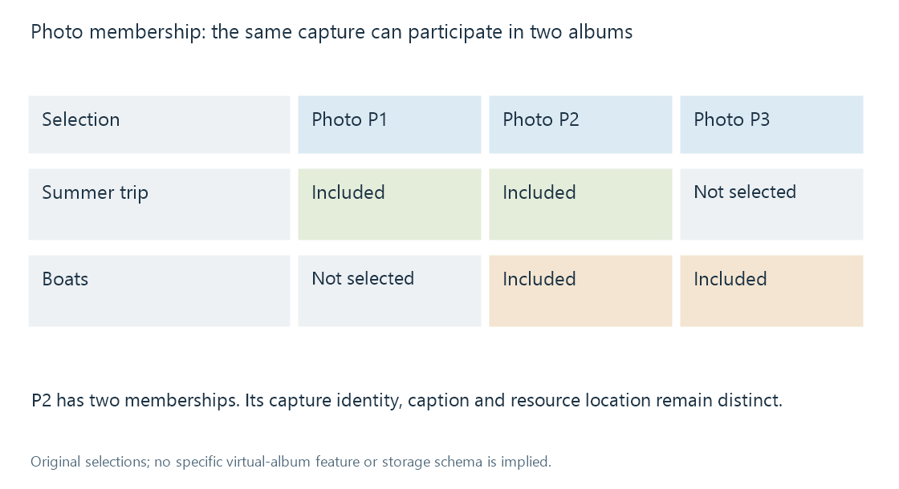

Photo albums and picture membership
A photo album groups picture resources by an intended selection or arrangement while physical folders, image identity and derived copies remain separate.
A photo album gathers pictures for a purpose: a trip, a person, an event or a chosen visual sequence. The membership explains which pictures belong together. Their file locations explain where the stored resources are found.
The same harbour photograph can belong to Summer trip and Boats without requiring another original capture.

In a library such as Emby, storage structure and catalogue browsing supply context for picture organisation. Whether a particular album is represented by a folder, a catalogue group or another application feature depends on the workflow.
Selection is different from location
| Meaning | Original example |
|---|---|
| Physical folder | Camera imports / July |
| Event selection | Summer trip |
| Subject selection | Boats |
| Curated sequence | Departure, crossing, arrival |
| Derived export | A small copy for display |
Moving a picture to another directory changes its storage location. Changing its album membership changes a selection. Neither operation inherently changes what the photograph depicts.
An album title also describes the group. It should not replace every member's caption with the same words. A picture of the jetty can retain Waiting for the ferry while its album supplies the trip context.
One capture can have several resources
A camera original, an edited version and a resized export can depict the same captured moment. They differ as resources and can differ visually.
An album intended to show finished pictures may choose the edited version. An archive-oriented selection may retain the original. Displaying both can be deliberate, but the relation should be understandable rather than appearing as accidental repeated pictures.
A smaller export can also omit descriptive metadata retained in the source. The album membership and caption in one catalogue do not automatically travel inside every exported image.
Order can tell a story
A capture-date sort can reconstruct a broad event sequence if the clocks and date fields agree. A deliberate album order can instead introduce the location, then show an activity, then finish with a portrait.
Capture dates are evidence for chronological arrangement. Subject labels and location metadata provide other perspectives. None alone supplies the curator's intended visual progression.
See Also
- Virtual library organization
- Media collections
- Photo capture dates and camera clocks
- Photo geolocation and coordinate metadata
- IPTC Photo Metadata